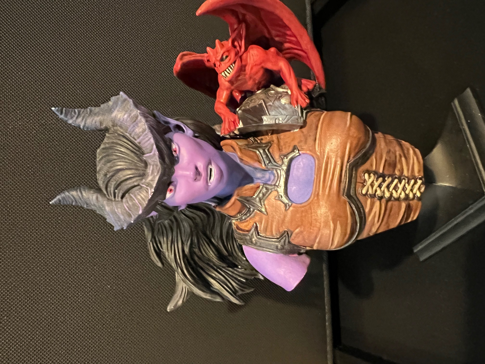
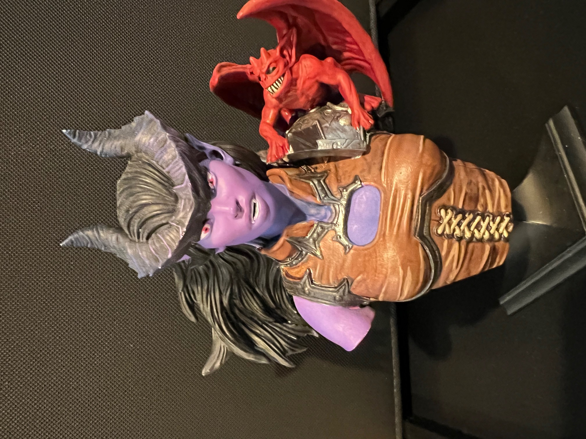

In addition to being a software developer, I also love to do a lot of different things. I am an avid video game player as well as a chef, painter, and all-around artist. Some of my favorite games are "Kingdoms of Amalur: Reckoning," "Elden Ring," "Mortal Kombat," "Star Wars: Knights of the Old Republic," and "Cyberpunk." I recently have a new favorite game called "Baulders gate 3" which has replaced skyrim as my favorite game of all time. Besides video games, I also enjoy board games. My favorite activity is playing and painting Warhammer models, some of which are showcased here. If you're here, thanks for checking out my resume and my art! I plan to eventually add links to my hobby website once it's up and running.

 
